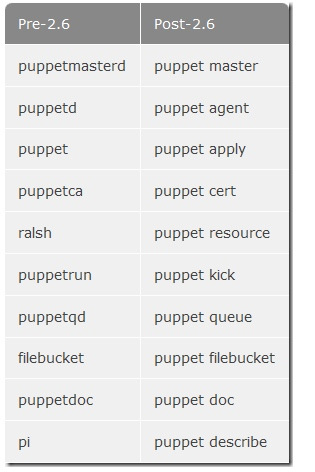
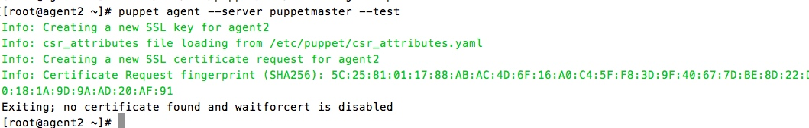
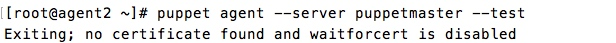
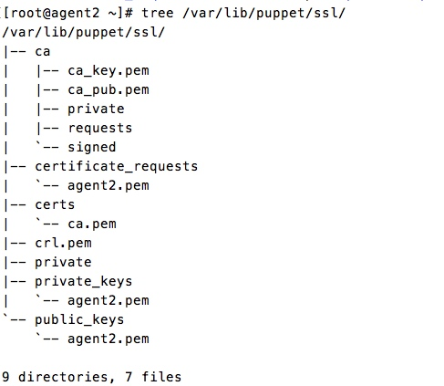
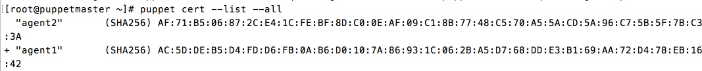
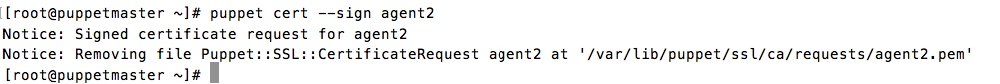

puppet学习笔记（一）
之前搞了一个月zabbix，基本上是能熟练使用了，不过在后来部署的时候发现这玩意在部署的时候机子少还行，机子多了手动安装手会残的。第一反应是用puppet，后来师父直接用puppet搞定了。索性自己也学一波，毕竟这是自动化运维大势所趋，必备技能啊。
puppet是c/s结构，有一个服务端和很多客户端。一般运行模式是客户端从服务端拉取指令然后执行。puppet很纠结的一个地方是版本不同导致的命令不同，主要是2.6版本前后的差异巨大，主要差异如下图：

这里以2.7版本为准，讲一下具体执行过程吧，假设服务端的hostname为puppetmaster、客户端的hostname为agent2
1、运行服务端
puppet master
对，就是这么简单，简单到超乎你的想象，简短的2个单词puppet server就跑起来了，当然第一次推荐用puppet master --no-daemonize --verbose 这是非daemon模式，简而言之就是运行此命令server会在前台运行，你可以看到server启动的整个流程以及agent向server注册的过程
2、客户端向服务端申请证书
puppet agent --certname agent2 --server puppetmaster --test
这里--certname可以不加，因为客户端的hostname就是agent2，在这里加了就是为了说明如果你不想以hostname的名字来注册，你可以使用certname后跟上自己想要的名字去注册。有的文章会使用puppet agent --server puppetmaster --no-daemonize --onetime --verbose --debug这条命令来注册，其实都一样，这个是前台输出日志，报错时方便调试，但是我要说如果你是第一次安装的话，完全不需要使用这种调试模式，你只要确保master开启，且--server后面的主机名（主机名就是puppet server的hostname）写正确，注册基本上不会发生错误。
理论上注册成功如下图

但是我在安装的时候发生了无法安装的情况，原因是我之前已经安装了

可以看到，我这里注册没有绿色的ssl认证过程，因为我之前已经注册过，虽然在master上已经删除了agent2的证书，但是agent2上自己还留了证书，如下图

知道了原因解决起来就很简单了，删除agent2.pem即可，find /var/lib/puppet/ssl/ -name agent2.pem -delete
3、服务端签发证书

上面的图中可以看到，agent2前面没有+，agent1前面有+，因为agent1已经在服务端签发证书了，那么如何签发证书呢

也很简单，一条命令就可以了。

整个c-s的第一次交互就这么完成了。可以看到我签发了三个证书，agent1就是puppet master上使用了--certname参数生成的，不加就是最下面的puppetmaster，以下命令作为对比可以看出不同：
puppetmaster puppet agent -server puppetmaster --test
agent1 puppet agent --certname agent1 --server puppetmaster --test
agent2 puppet agent --server puppetmaster --test
在这里还是要提几句，如果服务端注销了某个客户端证书，那么相对应的客户端也需要把本地的证书删除，否则下次就会和我上面的情况一样，无法注册。